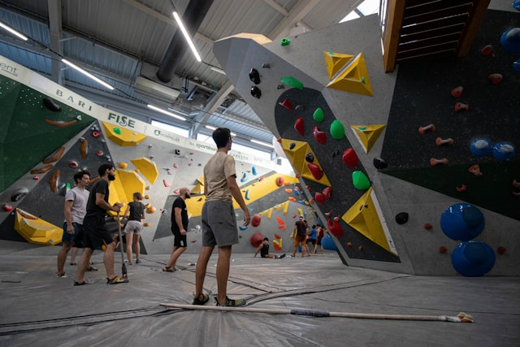
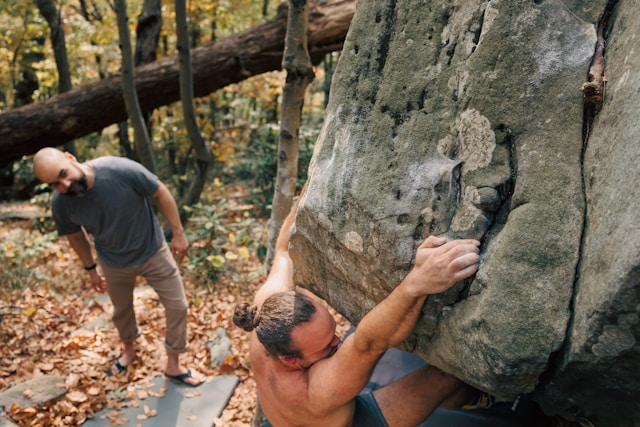

Klätterplatser
Här hittar du olika platser där du kan klättra – både inomhus och utomhus. Sverige har många fina klätterområden för alla nivåer.
Klätterhallar
Klätterhallar är perfekta för nybörjare och för träning året runt. Här finns färdiga leder, säker utrustning och ofta möjlighet att hyra det du behöver.
Utomhusklättring
Att klättra utomhus ger en helt annan upplevelse. Du klättrar på riktiga klippor och får njuta av naturen samtidigt.
Populära platser i Sverige
Kullaberg: Ett av Sveriges mest kända klätterområden med fantastisk utsikt över
havet.
Bohuslän: Känd för sin granit och klassiska tradklättring.
Stockholm: Många mindre klippor och boulderingområden runt staden.
Boulderingområden
Bouldering kan du göra nästan var som helst där det finns stenblock. Det finns många populära områden runt om i Sverige där klättrare samlas.
Säkerhet utomhus
När du klättrar utomhus är det viktigt att ha rätt kunskap och utrustning. Kontrollera alltid väder, utrustning och säkerhet innan du börjar klättra.
Hitta din plats
Oavsett om du vill klättra inomhus eller utomhus finns det många möjligheter. Börja med en klätterhall och utforska sedan naturen när du känner dig redo.

